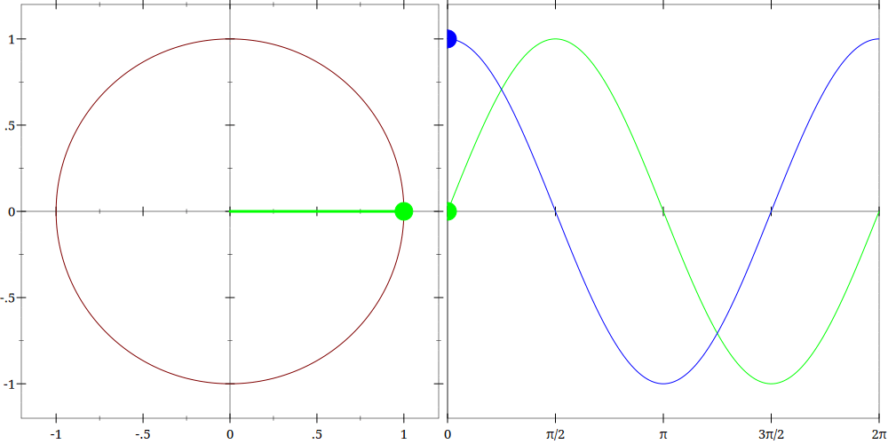

This is part two of the "Math for Gamedev 101" series. You can read part one here: Math for Gamedev 101: Vectors. As before, these are my notes from Simon's course on Math for Game Developers. This part is dedicated to basic trigonometry. The first GIF is from the Wikipedia article on radians, and the second one was generated with ImageMagick from this Racket snippet.

A radian is the angle subtended by an arc equal to the radius.

Animated unit-circle view of sine and cosine.
#lang racket
(require rackunit "vectors.rkt")
;; Radians, like degrees, are units of angular measure
;; less "intuitive" than degrees, but used in many areas of mathematics
;; one rad = 180/π° ≈ 57.3°, full circle is 2π rad
;; An arc of a circle with the same length as the radius
;; of that circle subtends an angle of 1 radian
;; Proportions are 180° == π rad
; note: shadowing standard racket functions
(define (degrees->radians x) (/ (* pi x) 180.0))
(define (radians->degrees x) (/ (* 180.0 x) pi))
(define ε 1e-12)
(test-case "Degrees and Radians"
(check-= (degrees->radians 90) (/ pi 2) ε)
(check-= (degrees->radians 45) (/ pi 4) ε)
(check-= (radians->degrees pi) 180 ε)
(check-= (radians->degrees (/ pi 3)) 60 ε))
;; angle θ
;; |\
;; | \
;; | \
;; | \
;; | \
;; | \ < hypotenuse
;; adjacent > | \
;; | \
;; | \
;; | \
;; |_ \
;; |_|_________\
;; ^
;; opposite
(define (sin/cos/tan adj opp [hyp 1])
(values
(/ opp hyp) ;; sin, for unit vector sin == opp
(/ adj hyp) ;; cos, for unit vector cos == adj
(/ opp adj))) ;; tan
;; Note: there is a special 30°-60°-90° triangle - these angles are in the ratio 1 : 2 : 3.
;; A useful property of such triangles is that their side lengths are in the ratio 1 : √3 : 2.
(test-case "Basic Trigonometric Functions"
;; For θ = 30°: opposite = 1, adjacent = √3, hypotenuse = 2.
(define θ (/ pi 6))
(define-values (s c t) (sin/cos/tan (sqrt 3) 1 2))
(check-= s (sin θ) ε)
(check-= c (cos θ) ε)
(check-= t (tan θ) ε)
;; sin and cos are the same curve
;; just offset π/2 from each other
(define α (* 2 pi (random)))
(check-= (sin α) (cos (- α (/ pi 2))) ε)
;; tan is ratio of sine to cosine
;; closer to π/2 cos approaches 0 while tan approaches infinity
(check-= (tan α) (/ (sin α) (cos α)) ε))
;; Cartesian coordinate system is the standard way to represent
;; a position in space using perpendicular axes (x y z)
;; Polar coordinate system specifies a given point in a plane
;; by using a distance and an angle as its two coordinates (r θ)
;; v ⋅ x = ‖v‖ ‖x‖ cosθ, so for unit vectors v ⋅ x = cosθ
(define/contract (cos-between a b)
(-> numvector? numvector? number?)
(/ (dot a b) (* (magnitude a) (magnitude b))))
(test-case "Vector/Angle Conversions"
(define v #(0.707 0.707)) ; 45° unit vector
(define x #(1 0))
(check-= (cos-between v x) (cos (/ pi 4)) ε)
(check-= (cos-between #(1 0) #(0 1)) 0 ε)
(check-= (cos-between #(1 0) #(1 0)) 1 ε)
;; to get angle from cos we need inverse function (arc arccosine)
(define α (* pi (random)))
(check-= (acos (cos α)) α ε)
;; however it only works for the particular range (or domain)
;; because sin or cos are NOT one-to-one e.g.
(check-= (cos α) (cos (- α)) ε)
(check-= (acos (cos (- (* 2 pi) α))) α ε)
;; for arccosine α should be within [0, π]
;; for arcsine (and arctangent) α should be within [-π/2, π/2]
;; to resolve this ambiguity atan2 function is provided
;; by most libraries, see usage example in cartesian->polar
)
(define/contract (polar->cartesian p)
(-> vector2/c vector2/c) ;; (r θ) to (x y)
(match-define (vector r θ) p)
(vector (* r (cos θ)) (* r (sin θ))))
(define/contract (cartesian->polar v)
(-> vector2/c vector2/c) ;; (x y) to (r θ)
(match-define (vector x y) v)
(vector (magnitude v) (atan y x)))
(test-case "Polar/Cartesian: there and back again"
(define p (vector 5 (/ pi 3)))
(define p* (cartesian->polar (polar->cartesian p)))
(match-let ([(vector r θ) p][(vector r* θ*) p*])
(check-= r r* ε)
(check-= θ θ* ε))
(define v #(3 4))
(define v* (polar->cartesian (cartesian->polar v)))
(match-let ([(vector x y) v][(vector x* y*) v*])
(check-= x x* ε)
(check-= y y* ε)))
(require math/number-theory)
;; We very rarely need to implement trig functions ourselves but
;; if we have to there is always Polynomial Approximation.
;; Here is an easy example with Taylor Series formula:
(define (taylor/cos x)
(for/fold ([acc 1])
([i (sequence-filter even? (in-naturals 2))]
[f (in-cycle (list - +))]
#:do [(define next (/ (expt x i) (factorial i)))]
#:break (< next ε))
(f acc next)))
(define (taylor/sin x)
(for/fold ([acc x])
([i (sequence-filter odd? (in-naturals 3))]
[f (in-cycle (list - +))]
#:do [(define next (/ (expt x i) (factorial i)))]
#:break (< next ε))
(f acc next)))
(test-case "Polynomial Approximation with Taylor Series formula"
(define α (* 2 pi (random)))
(check-= (sin α) (taylor/sin α) ε)
(check-= (cos α) (taylor/cos α) ε))
(define SIZE 16) ;; tiny lookup table
(define STEP (/ (/ pi 2) (sub1 SIZE)))
;; (define lut (for/vector ([i (in-range SIZE)]) (sin (* i STEP))))
(define lut #(0
0.10452846326765346
0.20791169081775931
0.3090169943749474
0.40673664307580015
0.49999999999999994
0.5877852522924731
0.6691306063588581
0.7431448254773941
0.8090169943749475
0.8660254037844386
0.9135454576426009
0.9510565162951535
0.9781476007338056
0.9945218953682733
1.0))
(define (fmod x y) (- x (* y (floor (/ x y)))))
(define (map-to-sin-range α)
(let ([α (fmod α (* 2 pi))]) ; [0, 2π) wrap first
(cond
;; quadrant I
[(<= 0 α (/ pi 2)) (values α 1)]
;; quadrant II: sin(α) = sin(π - α) y-axis mirror
[(<= (/ pi 2) α pi) (values (- pi α) 1)]
;; quadrant III: sign switch!
[(<= pi α (/ (* 3 pi) 2)) (values (- α pi) -1)]
;; quadrant IV: one way to deduce is sin(α) = -sin(α - π)
;; to end up in quadrant II and we know sin(α - π) = sin(2π - α)
[else (values (- (* 2 pi) α) -1)])))
(define (lerp A B t) (+ A (* t (- B A))))
(define (lut/sin α)
(let-values ([(α sign) (map-to-sin-range α)])
(define i (/ α STEP))
;; some clamping required to avoid lut out-of-bounds
(define i* (max 0 (min (sub1 SIZE) i)))
(define i1 (exact-floor i*))
(define i2 (min (sub1 SIZE) (add1 i1)))
(define t (- i* i1))
(* sign (lerp (vector-ref lut i1) (vector-ref lut i2) t))))
;; Linear interpolation with this table size has worst-case error ~= 0.00137
(define lut/sin-ε 0.0014)
(test-case "Lookup Table Approximation with Linear Interpolation"
;; deterministic dense sweep over one full period [0, 2π]
(define sweep-samples 200000)
(for ([k (in-range (add1 sweep-samples))])
(define α (* (* 2 pi) (/ k sweep-samples)))
(check-= (lut/sin α) (sin α) lut/sin-ε))
;; key boundary angles
(for ([α (list (* -2 pi)
(* -3 (/ pi 2))
(- pi)
(/ (- pi) 2)
0
(/ pi 2)
pi
(/ (* 3 pi) 2)
(* 2 pi))])
(check-= (sin α) (lut/sin α) ε)))